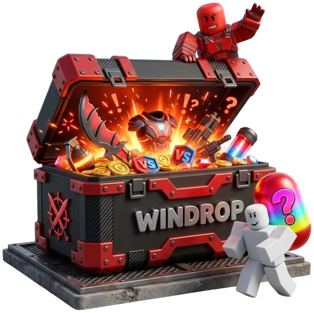
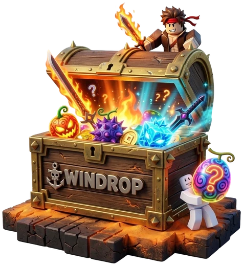
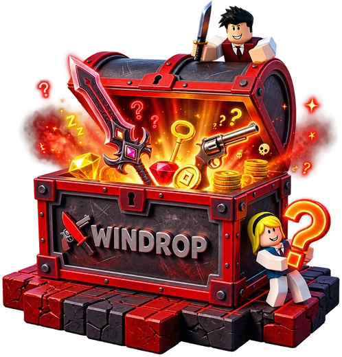

COLEÇÃO / 01CATÁLOGO
CASES. MINIJOGOS. POSSIBILIDADES.
SEU PRÓXIMODROP COMEÇAAQUI.
Um universo de cases e minijogos.
Um bot só seu. Tudo começa no Telegram.
Endereço do bot ainda não configurado.
18+
Entretenimento para adultos. Há risco de perda de moedas.
Não é investimento nem uma forma de renda.
UNIVERSO WINDROPCASE / 01

EXPLORE A COLEÇÃORivals
Comece pelo Telegram
Crie o seu bot pessoal
Conheça o catálogo de gift cards
01 / COMECE POR AQUI
Poucos passos.
Um espaço só seu.
O caminho passa pelo bot principal. Ele orienta o cadastro e informa a disponibilidade do acesso.
Abra o bot principal
Comece a conversa no Telegram. Confira as orientações, os requisitos e as condições para participar.
O PONTO DE PARTIDACrie seu bot pessoal
Siga o fluxo oficial de Managed Bots do Telegram. Você cria o seu bot e confirma cada etapa.
CRIADO POR VOCÊEntre na WINDROP
Abra o aplicativo pelo seu bot. Explore o catálogo e leia as regras e as chances antes de jogar.
SUA EXPERIÊNCIA NO APP
Nunca envie tokens, senhas ou códigos de login por aqui. A criação do bot acontece no fluxo oficial do Telegram.
02 / ENCONTRE SUA EXPERIÊNCIA
Um universo.
Vários jeitos de jogar.
Conheça o visual. Consulte custos, regras e chances no aplicativo antes de participar.
COLEÇÃO / 02CATÁLOGO

COLEÇÃO / 03CATÁLOGO

ESCOLHAS & CHANCE
Mines
Um tabuleiro, escolhas e casas ocultas. Revelar uma mina pode encerrar a rodada com perda das moedas usadas.
CADA RODADA É DIFERENTE
Crash
O multiplicador pode parar a qualquer momento. O histórico não prevê a próxima rodada nem garante retorno.
TENTATIVA, NÃO PROMESSA
Upgrade
Uma tentativa de trocar por outro item, conforme a chance informada. Se falhar, o item usado pode ser perdido.
REGRAS ANTES DA ESCOLHA
Copos
Escolha um copo de acordo com as regras da rodada. Acertar não é garantido; errar pode consumir as moedas usadas.
Representações ilustrativas. Modos, regras e disponibilidade devem ser confirmados no aplicativo.
03 / SEU BOT. SEU ACESSO.
Não é só um link.
É o seu ponto
de partida.
O bot principal orienta o cadastro. Você cria seu Managed Bot pela ferramenta oficial do Telegram. Depois, é pelo seu bot que você abre a WINDROP.
- Você confirma a criação no Telegram.
- Nenhum token ou senha é solicitado neste site.
- O bot principal informa as condições de acesso.
04 / MOEDAS → CARTÃO-PRESENTE
Suas moedas.
Sua escolha
no catálogo.
O caminho de resgate é por cartões-presente disponíveis, conforme as regras do aplicativo. Não é saque em dinheiro.
- 01
Confira as moedas elegíveis
Consulte seu saldo e as condições de resgate no aplicativo.
- 02
Escolha uma opção em estoque
Verifique região, valor, custo em moedas e regras do emissor.
- 03
Revise antes de solicitar
Confira os requisitos e o prazo informado. Não há garantia de estoque permanente ou entrega imediata.
Sem promessa de pagamento em conta bancária, cartão bancário ou PIX. Disponibilidade e condições precisam ser confirmadas no aplicativo.
05 / SEM RODEIOS
Antes do
primeiro drop.
As respostas que importam.
Sem promessas escondidas.
18+
Entretenimento com limites.
Defina um limite de tempo e de gasto. Faça pausas. Não use valores destinados a despesas essenciais.
O que é a WINDROP?
Uma experiência de cases e minijogos acessada pelo Telegram. Esta página apresenta a proposta: não abre jogos, recebe pagamentos ou realiza resgates. As imagens são ilustrativas.
Como entro e por que criar um bot?
O primeiro passo é conversar com o bot principal. Ele orienta o cadastro; você cria o seu bot pessoal pelo fluxo oficial de Managed Bots do Telegram. Depois, seu bot dá acesso ao aplicativo. Não é necessário copiar tokens ou enviar senhas nesta página.
Posso sacar dinheiro ou receber por PIX?
Não. O caminho apresentado é o resgate de moedas elegíveis por cartões-presente do catálogo, sujeito a estoque, região e condições. Não há promessa de saque, transferência bancária ou pagamento por PIX.
Os resultados ou os drops são garantidos?
Não. As mecânicas envolvem chance; resultado, valor de item e lucro não são garantidos. Você pode perder as moedas usadas. Consulte as probabilidades, o custo e as regras de cada modo antes de confirmar. Resultados anteriores não preveem resultados futuros.
Quem pode participar?
Somente pessoas com 18 anos ou mais, onde a participação for permitida. Disponibilidade regional, critérios de elegibilidade e eventuais verificações devem ser conferidos no bot principal e no aplicativo. Esta página não realiza cadastro ou verificação de idade.
A WINDROP é oficial da Roblox?
Não. A WINDROP é um projeto independente, sem vínculo, patrocínio ou endosso da Roblox. Nomes e marcas de terceiros pertencem aos seus respectivos titulares.
Por que o botão pode não abrir o Telegram?
Se o endereço do bot ainda não estiver configurado e confirmado, o botão mostra apenas um aviso local. Nenhuma conversa é aberta com um destinatário de exemplo. A mesma proteção vale para o contato de suporte.
A EXPERIÊNCIA COMEÇA COM UM OLÁ.O próximo passo
O próximo passo
é uma conversa.
Conheça o caminho antes de jogar.
Comece pelo bot principal no Telegram.
Endereço do bot ainda não configurado.
EXCLUSIVO PARA MAIORES DE 18 ANOS